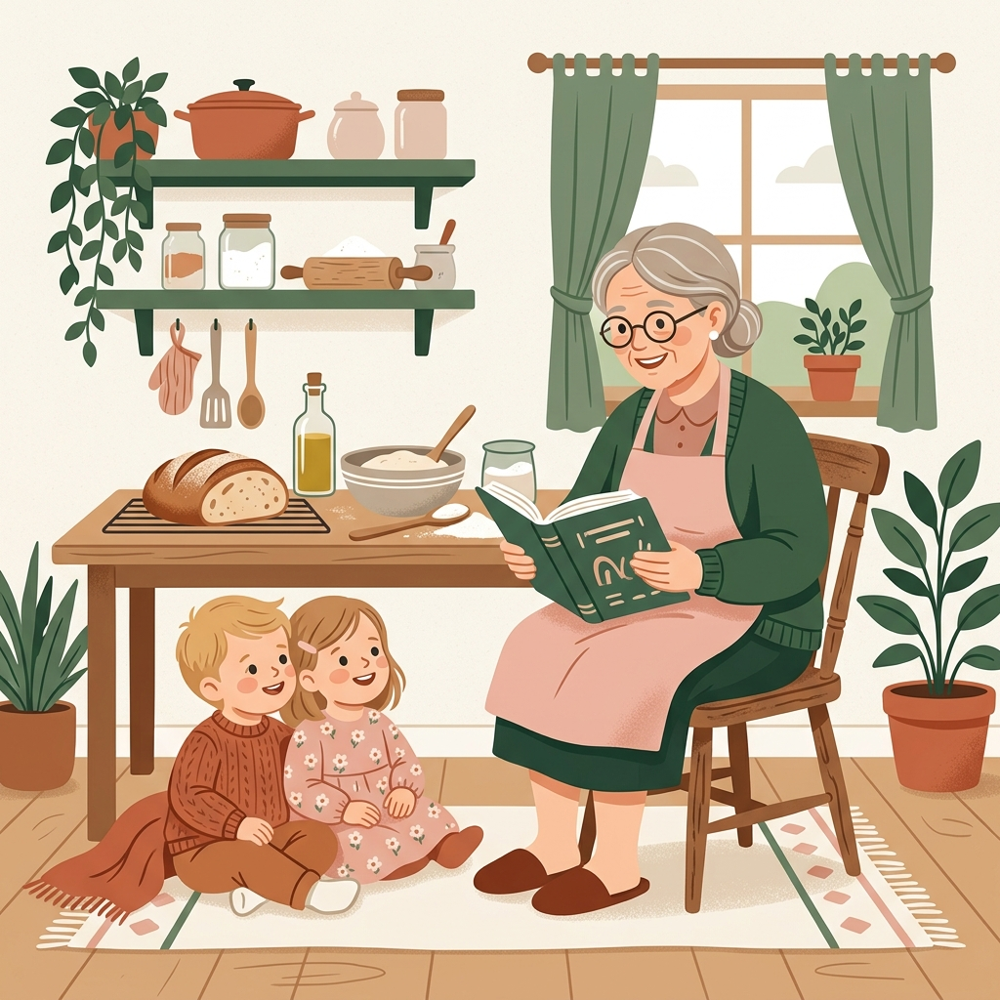

Zeit schenken. Wissen teilen. Gemeinsam etwas bewegen.
Mainhattan Mamas lebt von Frauen, die sich auf ihre Weise einbringen möchten: mit einer kleinen Geste von Tür zu Tür, mit helfenden Händen bei Treffen oder mit wertvollem Know-how aus Beruf und Alltag.
Du musst keine Heldin sein und keine freien Nachmittage im Überfluss haben. Du entscheidest selbst, was gerade zu deinem Leben passt: einmalig, gelegentlich oder regelmäßig. Kein starres Ehrenamt, kein Druck und kein Dauer-Commitment – sondern Engagement in einem Rahmen, der sich gut anfühlt.
Jetzt mitmachen: Sag uns, was zu dir passtDein Plus als Teil unserer Crew
Mitmachen heißt bei uns nicht: noch ein stressiger Termin im Kalender.
Es bedeutet, Teil einer starken Gemeinschaft zu sein, die sich gegenseitig den Rücken stärkt. Als Teil unseres Netzwerks bist du mittendrin: Du knüpfst echte Kontakte zu Frauen im Viertel, tauschst dich bei exklusiven Crew-Treffen aus und gestaltest Formate mit, die Frankfurt menschlicher machen.
So kannst du dich einbringen
1. Wochenbett-Patin werden
Kleine Gesten. Große Erleichterung.
Im Wochenbett steht die Welt kopf. Oft reicht schon eine winzige Geste, um den Tag zu retten. Als Wochenbett-Patin schenkst du genau die praktische Unterstützung, die im Alltag sofort ankommt:
- Eine frische Suppe oder einen Kuchen vor die Tür stellen
- Für 20 Minuten vorbeikommen, saugen oder Wäsche anwerfen
- Eine dringende Besorgung aus der Drogerie mitbringen
- Einfach ein offenes Ohr schenken
Keine starre 1:1-Verpflichtung, keine ungefragten Besuche: Eine Mama meldet einen Bedarf. Wir schauen, wer in der Nähe gerade Zeit hat.
2. Begegnungen & Treffen begleiten
Du hast Lust, andere Frauen willkommen zu heißen und vor Ort mit anzupacken? Hilf mit, dass unsere offenen Treffen zu vertrauten Orten werden:
- Mamas begrüßen und neue Gesichter in die Runde holen
- Beim Auf- und Abbau helfen
- Ein Auge auf die Kinder werfen, damit Mamas kurz durchatmen können
- Mit anpacken, wo gerade eine helfende Hand fehlt
3. Feste & Aktionen unterstützen
Du kannst dich nicht regelmäßig binden, hast aber ab und zu Lust auf ein konkretes Event?
- Bei Sommerfesten, Aktionstagen oder Flohmärkten unterstützen
- Am Buffet oder bei Mitbring-Aktionen helfen
- Wegweiser sein, Stände betreuen oder Stationen begleiten
4. Dein Wissen. Unsere Community.
Mütter und erfahrene Frauen teilen, was sie können.
Du musst keine zertifizierte Beraterin sein, um anderen zu helfen. Jede Frau bringt Lebenserfahrung oder Fachkenntnisse mit. Teile dein Können in einem Impuls oder Workshop:
- Gesundheit & Babyzeit: Stillen, Tragen, Erste Hilfe
- Beruf & Recht: Wiedereinstieg, Elternzeit-Planung, Finanzen
- Alltag & Erziehung: Autonomiephase, Schulstart
- Kreatives & Auszeiten: Yoga, Basteln, Kochen
Mainhattan Mamas stellt den Raum und lädt ein. Du bringst dein Thema mit – auf Augenhöhe.
5. Erfahrene Frauen & Generationen-Patinnen
Ob deine eigenen Kinder längst erwachsen sind oder du selbst keine Kinder hast: Wenn du Lebenserfahrung, Herzenswärme und Zeit mitbringst, bist du bei uns genau richtig.
Als Vorleserin bei der Geschichtenzeit, als erfahrene Ratgeberin oder als Wahl-Oma, die junge Familien im Alltag entlastet.

6. Unverbindlicher Austausch
Du bist dir noch nicht sicher, wie oder wie oft du dich einbringen möchtest? Kein Problem!
Lass uns einfach bei einem Kaffee (oder virtuell) kennenlernen. Wir freuen uns über jedes neue Gesicht in der Community und finden gemeinsam heraus, ob und wie es für dich am besten passt.
Klingt nach dir?
Mach mit!
Wähle einfach aus, was dich anspricht – gern auch mehrere Punkte.
Wir melden uns persönlich bei dir und besprechen unverbindlich, wie dein Einsatz aussehen kann.